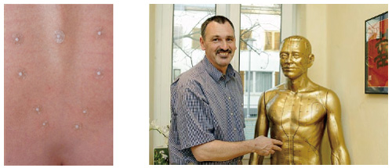

TESTIMONIAL
HOME > TESTIMONIAL > Römer, Ansgar

Römer, Ansgar
Dr. med.,Gynecologist and Obstetrician
Medical training officer at the medical training society Pro Medico
Advantages of New Pyonex
This new press tack can be ideally combined with body and auricular acupuncture. This enables simple, reliable and
gentle treatment with specific advantages in addition to the exact and particularly long-lasting adhesive properties,
which have been further improved over the former product.
The advantages of the New Pyonex press tacks for the
daily clinical work of therapists regarding practicality, safety, efficiency and patient friendliness are obvious
and will be readily assessable to every new user.
How I use the New Pyonex, Clinical Application of New Pyonex
The effects of the New Pyonex press tacks has been proven especially in the field of gynecology and obstetrics. Based on the high effectiveness the combined use of press tacks and body acupuncture should be considered, in particular for chronic complaints.
Patients benefit from the application of New Pyonex since they are safe, hygienic and very simple to use. The plaster
is very skin-friendly and breathable so therefore, based on my clinical experience, it rarely causes any skin reactions
even in patients with extremely sensitive skin. These press tacks allow an precise, long-lasting acupoint placement.
The duration of the application can usually be directed as being up to one week.
This is indicated for conditions like pregnancy induced carpal tunnel syndrome, hyperemesis gravidarum and back pain, but it is also effective for headache and pubic symphysis pain. It is ideal and most effective when this application is combined with or alternated with body acupuncture therapy. This safe, painless and pleasant-to-the-patient application demonstrably increases the effectiveness of body acupuncture in the interval between treatments.
The New Pyonex can be used at PC-6 for carpal tunnel syndrome, hyperemesis gravidarum. The New Pyonex has also been proven useful at the points REN-12 and ST-36 for the treatment of nausea of pregnancy.
The frequent complaint of back pain during pregnancy is an ideal and most effective condition for the application of New Pyonex. Acupoints in the region of BL-25 to 34 should be considered as well as DU-3 or 4 and possible distant points like BL-40 and 60 and GB-34. The efficacy and duration of effect of regular acupuncture for this condition is considered to be great, but the effect can be further increased and the time it takes for the effects to manifest can be shortened with the use of New Pyonex.
In cases of headache, pharmacotherapy is often not an option during pregnancy. The use of acupuncture is therefore both necessary and effective. Treatment with the addition of individually selected distant points like GB-41, LI-3, ST-36, ST-44, LI-4 and PC-6 can be ideally combined with the application of New Pyonex. The augmentation of therapeutic effects is demonstrated here also in my daily clinical practice. Pain in the pubic symphysis region can be a great burden for pregnant women. The application of the New Pyonex at the acupoints Ren-2, KI-11, ST-30 or local Ahshi points is recommended depending on the degree of the pain complaint. The combination with body acupuncture increases the effect in cases of extreme pain.
The role of physicians and midwifes during labor is to maintain the mobility of the women, and positively support delivery. Body acupuncture can be a hindrance under certain circumstances in this regard. Instead, for cases of mild discomfort and labor pains, which is felt particularly in the lumbar and sacral areas, the application of the New Pyonex in the region between BL-23 and BL34, Du-3 and Du-4 as well as local Ahshi points is recommended.
Here the powerful adhesive property of the newest generation of Pyonex is particularly valuable. The length of the needles is selected on an individual basis, but mostly the needle sizes 1.2 mm (blue) or 1.5 mm (pink) are used. The patient’s partner can stimulate the New Pyonex with massage and acupressure according to the preference of the patient. Pressing on a press tack that is integrated into the plaster further increases the effect of the needle placement.
Midwifes have also come to appreciate the benefits of New Pyonex during the puerperal period. Application at KI-16 can be effective in cases of problems during recovery or lingering pain after delivery.
Often a tendency towards pain, tension and restricted range of motion in the shoulder and neck area is observed. Acupoints like GB-21, BL-11 and Du-14 are then considered for acupuncture treatment. The additional use of press tacks has proven beneficial - in particular the application of New Pyonex at GB-21 should be considered.
The midwife is responsible for the care of mother and child during the puerperal period. During the first three months especially, painful infantile colics often present a problem in neonates. After discussion with the mother, using the smallest New Pyonex with the length of 0.3 mm (orange) has proven very helpful and effective in many cases in reducing or eliminating colic.
Because the use of these miniscule press tacks is considered absolutely safe and hygienic, there are no objections against their use for this condition. It has also been found that the application of the New Pyonex at LI-3 for is effective for very restless newborns in helping achieve a general equilibrium.
In the field of gynecology the application of press tacks has been proven effective for the treatment of conditions like menorrhalgia. Acupoints like SP-6, LI-3, GB-34, GB- 41, PC-6 and LI-4 may be used in a combination therapy of acupuncture and press tacks. In cases of PMS the application of the New Pyonex during the last week prior to the expected menstruation at the points LI-3, GB-41 and PC6 is recommended.
The diagnosis of endometriosis is associated with chronic gynecological pain conditions in many patients. Acupuncture treatment gives good effects that can be further improved by the interval application of New Pyonex at selected acupoints and Ahshi points.
In summary, the use of the New Pyonex during acupuncture treatment in the field of gynecology and obstetrics by midwifes and gynecologists has been proven to be of great value.
